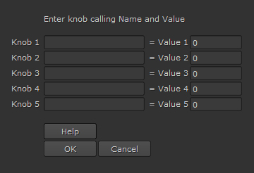

Description:
Multi Knob Values is a script to change knob values in selected nodes.

Operation:
Select nodes to change knob values. Now run script by clicking on Multi Knob Values from Pr_Suite Nuke menu or use the hotkey assigned to it. You can change values of up to five knobs at a time. Enter knob calling name and value for that knob, currently only numerical and boolean values are supported. Click OK to apply knob values to selected nodes.
Special Note:
Before selecting nodes to change knob values make sure the knobs are available in all nodes. Currently only numerical and boolean values are supported, if you try to set values other than numerical or boolean then no value will get applied to that knob. If you write only knob calling name and don't assign any value to it then 0 value will get applied to that knob.